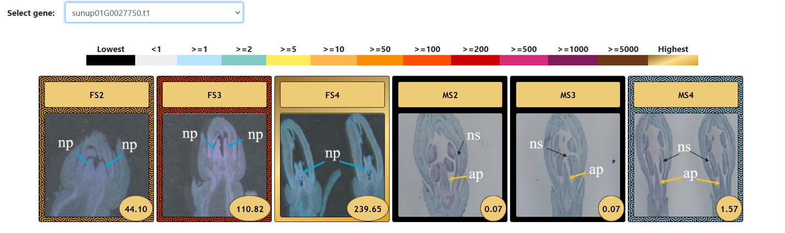
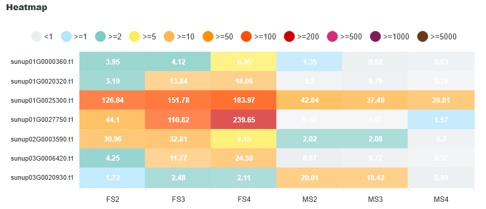

Trabajo de Fin de Máster · Máster Universitario en Bioinformática (UNIR)
La papaya (Carica papaya) es el tercer cultivo tropical más importante a nivel mundial según la FAO, con una producción global que superó los 14 millones de toneladas en 2022. Pese a su relevancia económica y nutricional, su información transcriptómica se encontraba dispersa en distintos repositorios públicos sin ningún portal centralizado.
El objetivo de este TFM fue desarrollar un atlas de expresión público para Carica papaya, minando y procesando 8 datasets de RNA-Seq disponibles en el European Nucleotide Archive (ENA), e integrando los resultados en el portal genómico IHSM Subtropicals, construido sobre la herramienta EasyGDB desarrollada en el mismo grupo de investigación del IHSM "La Mayora" (Málaga).
Conclusiones clave
- Primer atlas público de papaya: se integraron 8 BioProjects del ENA (47 muestras en total) cubriendo maduración de fruto, dimorfismo sexual, morfogénesis del gineceo, regeneración in vitro y estrés hídrico y biótico — centralizando por primera vez información que estaba dispersa en proyectos no relacionados entre sí.
- Pipeline bioinformático reproducible: control de calidad (FastQC/MultiQC), descontaminación (Kraken2), procesado de lecturas (FastP), alineamiento (HISAT2), cuantificación (featureCounts) y normalización a TPM (R, DGEobj.utils), ejecutado tanto en local como en el supercomputador Picasso de la UMA.
- Validación biológica de los datos: el análisis de reducción de dimensionalidad (PCA, MDS, ICA, t-SNE, UMAP) mostró agrupamientos coherentes por sexo floral y estadio de desarrollo, confirmando la consistencia biológica del conjunto de datos antes de su publicación.
- Caso de uso real con genes candidatos: usando el propio atlas se identificaron y validaron patrones de expresión diferencial entre flores masculinas y femeninas para genes como CYC, SUP, HEC2, MUTE, TGA9, AGL11 y CYCD3-1, reproduciendo resultados ya descritos en la literatura científica.
- Publicado y en producción: el atlas está integrado en IHSM Subtropicals DB, con visualizaciones interactivas y archivos de anotaciones cruzadas con Araport11, SwissProt, TrEMBL, NCBI e InterPro.
Un caso de uso real: diferenciación sexual en papaya
Para demostrar la utilidad del atlas se analizó el perfil de expresión de un dataset centrado en el desarrollo del pistilo, comparando flores masculinas y femeninas en tres estadios de desarrollo. Estas son algunas de las visualizaciones que ofrece la herramienta:





Todos estos resultados reprodujeron fielmente los perfiles de expresión descritos en el estudio original del que se obtuvieron los datos, validando tanto la calidad del pipeline como la utilidad del atlas para la exploración in silico de genes candidatos.